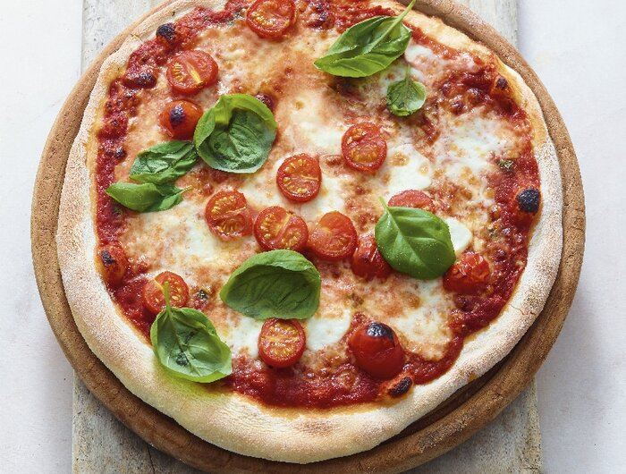

Pizza Caprese

Pizza Caprese is a classic Italian dish that features a simple yet
flavorful combination of fresh mozzarella, ripe tomatoes,
and basil leaves, drizzled with extra virgin olive oil and
a sprinkle of sea salt. Its bright, fresh ingredients and
minimal seasoning highlight the quality of the components,
making it a light and refreshing choice.
Ingredients
- 15 g yeast cube
- 1 Tsp sugar
- 450 g flour
- 3 Tbsp olive oil
- Salt
- 350 g canned diced tomatoes
- 1 Tbsp tomato paste
- 1 Tsp dried oregano
- Chili powder
- 250 g cherry tomatoes
- 250 g mozzarella
- Flour for dusting
- Basil leaf (for garnish)
Steps
- For the dough, dissolve the yeast with the sugar and about 250 ml of lukewarm water. Add the flour, olive oil, and 1 Tsp salt, and knead everything into a smooth dough. Add more water or flour if needed. Cover and let rise in a warm place for about 1 hour.
- Preheat the oven with a pizza stone according to the manufacturer's instructions. Mix the diced tomatoes with the tomato paste, oregano, salt, and chili, and adjust seasoning. Wash, clean, and halve the cherry tomatoes. Slice the mozzarella into thin rounds. Form 4 balls from the dough and roll each out on a floured surface into thin, round discs, leaving the edges slightly thicker. Spread with the tomato mixture, distribute the mozzarella and cherry tomatoes on top, and bake in the oven for 5-10 minutes until golden brown. Garnish with basil and serve.